<mat-toolbar class="mat-toolbar mat-elevation-z7" *ngIf="hideNavbar()">
  
  <div style="width: 15px;"></div>
  <span>Movimientos</span>
  <span class="spacer"></span>
  <button mat-icon-button aria-label="icon-button settings">
    <mat-icon>settings</mat-icon>
  </button>
  <button mat-icon-button [matMenuTriggerFor]="menu" aria-label="icon-button with a menu">
    <mat-icon>person</mat-icon>
  </button>
  <mat-menu #menu="matMenu">
    <button mat-menu-item disabled>
      <mat-icon>person_outline</mat-icon>
      <span>Perfil</span>
    </button>
    <button routerLink="/login" (click)="logout()" mat-menu-item>
      <mat-icon>arrow_forward</mat-icon>
      <span>Salir</span>
    </button>
  </mat-menu>
</mat-toolbar>
